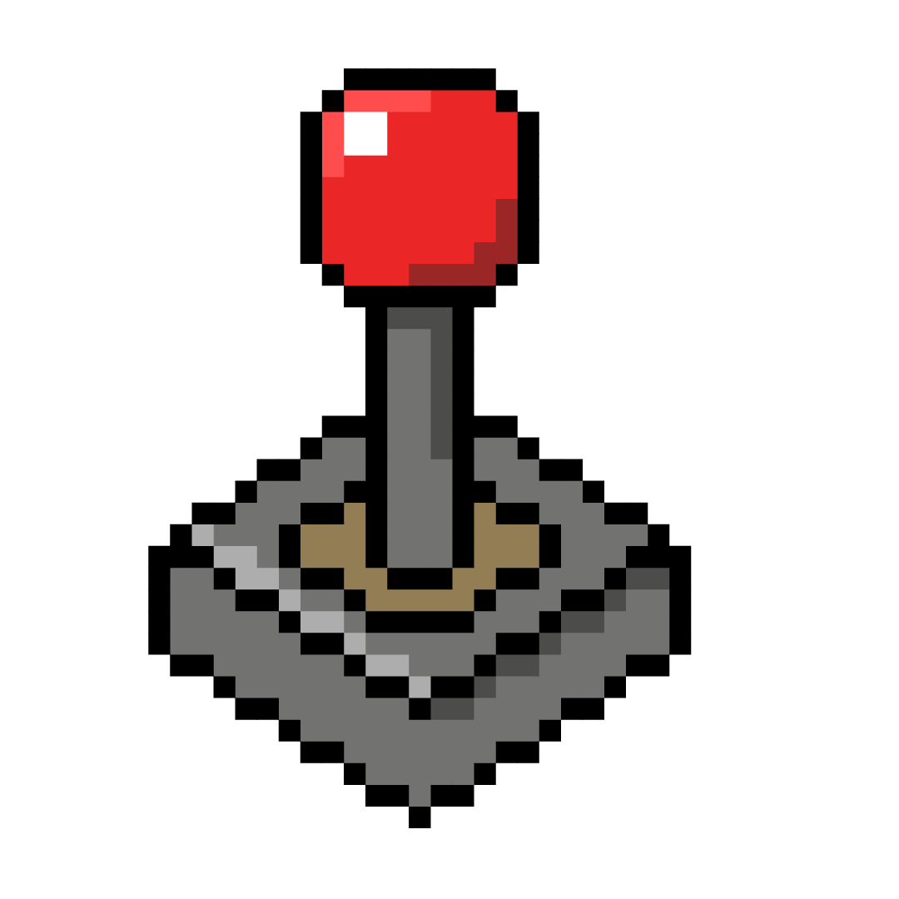

1962:De eerste multiplayer game
Spacewar! Gemaakt in 1962. Een van de eerste echte multiplayer game gemaakt door Steve Russell en collega’s van MIT. Deze game was ontworpen voor de DEC PDP-1 computer.
Wat is nou de definitie van een mulitplayer game? Eigenlijk is het een verzamelnaam voor het spelen van een online spel op de computer waarbij je met meerdere spelers speelt. Je kan samen spelen en tegen elkaar. Je kan samen spelen met iemand op één computer spelen of zelfs met iemand aan de andere kant van de wereld. Er is dus niet één spel wat een multiplayer game is er zijn duizenden verschillende spellen die allemaal onder multiplayer vallen.
Spacewar! Gemaakt in 1962. Een van de eerste echte multiplayer game gemaakt door Steve Russell en collega’s van MIT. Deze game was ontworpen voor de DEC PDP-1 computer.
Op het PLATO (Programmed Logic for Automatic Teaching Operations) computersysteem verschenen verschillende games zoals: Airfight, Empire, Spasim en Maze War. Gemaakt door onder andere NASA studenten, dit legde de basis voor latere first person shooters.
Multiplayer ontstond in de arcadehal met Pong en Tank en kwam later ook de naar mensen thuis. Waaruit games ontstonden zoals Super Mario Bros, Golden Axe en Quartet dit maakten samen spelen erg populair en leuk door het gebruik van split screen. Eind jaren ’80 konden spelers ook computers koppelen via LAN.

Dit is een baanbrekende shooter van id software en die heeft de LAN party groot gemaakt. Via machtmakingdiensten kon je ook online coöperatief spelen. Hierdoor werd de game snel heel populair en een groot succes.
Quake was een van de eerste game met online multiplayer via TCP/IP. Hierdoor hoefden mensen niet meer fysiek bij elkaar te zijn om via LAN te spelen. Waarna in QuakeWorld client side prediction werd toegevoegd waardoor je ook met een trage verbinding goed kon spelen
Quake III Arena en Unreal Tournaments maakte multiplayer games de hoofdmodus, waarbij vooral shooters enorm populair zijn. Waardoor ook de eerste esports ontstonden.
De lancering van Xbox Live in 2002 liet zien dat het heel eenvoudig kan zijn om online te gamen via consoles. Waarna Sony later volgde in 2006 met een gratis PlayStation Network voor de PS3.
PUBG kwam met een nieuwe game genre: battle royale. 100 spelers vechten om te overleven tot er één speler over is. Toen heeft Fortnite er een gehele game van heeft gemaakt, waarbij zij bouwen aan toevoegde. Dit was een enorm succes en sindsdien is battle royale niet meer weg te denken.